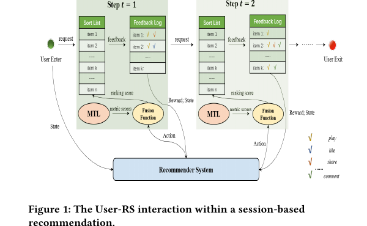
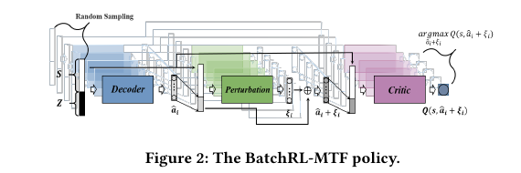
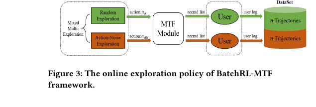
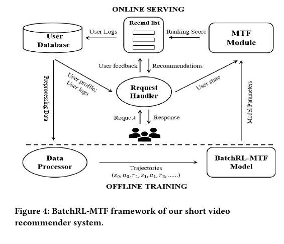
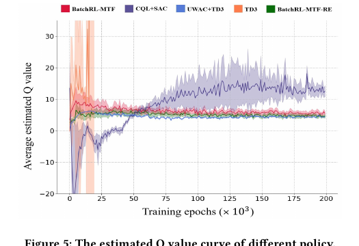
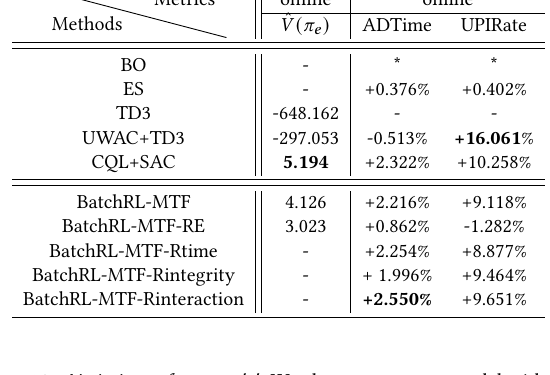
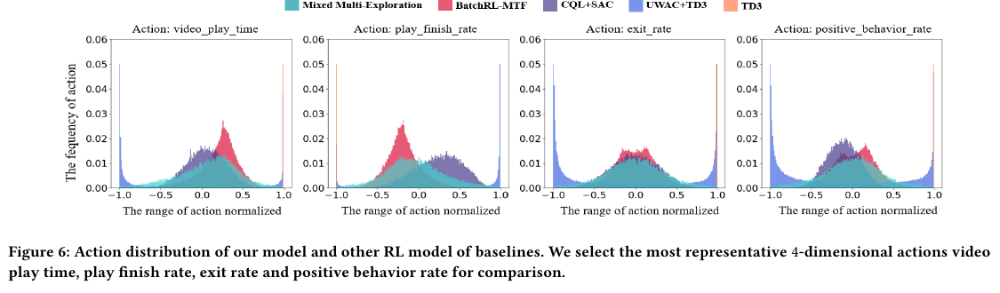
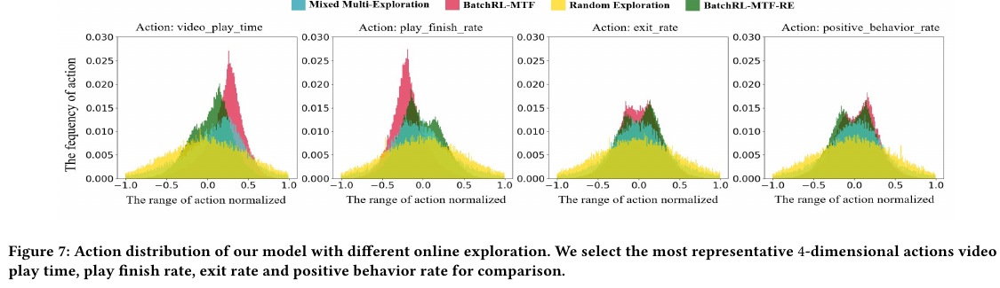
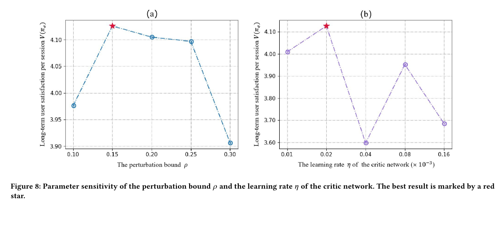

BatchRL-MTF
1. 基本信息
- 标题：Multi-Task Fusion via Reinforcement Learning for Long-Term User Satisfaction in Recommender Systems
- 作者：Qihua Zhang, Junning Liu, Yuzhuo Dai, Yiyan Qi, Yifan Yuan, Kunlun Zheng, Fan Huang, Xianfeng Tan
- 机构：Tencent Inc.
- 时间：2022
- arXiv：https://arxiv.org/abs/2208.04560
- 关键词：Multi-Task Fusion、Batch Reinforcement Learning、Long-Term User Satisfaction、Short Video Recommendation
- pdf位置：
C:\Users\chaol\Desktop\推荐论文阅读\reward sys\batchrl-mtf.pdf - 笔记位置：
论文笔记/精排/LTR与多目标融合/BatchRL-MTF.md - 分类：精排 / LTR与多目标融合
2. 相关论文
- IntEL：IntEL 在 related work 中把 BatchRL-MTF 这条 RL 式 multi-task fusion 路线作为相关融合方法引用。两者都在替代固定融合策略，但 BatchRL-MTF 学 session 级 fusion weights，IntEL 学 item 级 basic-list weights，并额外用用户 intent 和 error-ambiguity 分解约束融合。
- UnifiedRL：后续同一类 RL-MTF 工业路线。UnifiedRL 直接把 BatchRL-MTF 当作核心对比基线，主要改进点是把 online exploration 的边界显式写进 offline RL 训练，而不是只靠 BCQ 式行为约束和混合探索数据。
- xMTF：后续对 RL-MTF 的另一种批评与升级。xMTF 认为 BatchRL-MTF 这类方法虽然用了长期奖励，但仍然把融合函数先写成 log-sum 公式，RL 只是在公式里调权重；xMTF 的目标是把这个公式瓶颈改成可学习的单调融合函数。
3. 一句话总结
BatchRL-MTF 把推荐系统最后的 multi-task fusion 写成 session 级 MDP：状态是用户画像和最近行为，动作是一组个性化融合权重，奖励由播放时长、完播、互动等行为加权得到；它用 BCQ 风格的 offline Batch RL 从历史日志里学习较稳的调权策略，再用线上混合探索补充高价值 state-action 数据，最终在短视频线上 A/B 中提升 ADTime +2.216% 和 UPIRate +9.118%。
4. 论文在解决什么问题
4.1 MTF 不只是多任务分数的最后一层加权
主流工业排序链路通常先用 MTL 模型分别预测点击、播放时长、互动等多个目标，再用 MTF 把这些预测合成一个最终排序分数。论文指出，前面 MTL 已有大量研究，但最后的 fusion 往往还是靠人工经验、BO、ES 或简单公式调参。
问题在于，推荐不是一次曝光就结束。当前推荐会改变用户后续行为，短期点击最优不一定带来更长 session 或更高留存。因此这篇论文把 MTF 的目标从“当前请求即时收益”改成“session 内长期满意度”。
4.2 Figure 1：把推荐会话写成 MDP

Figure 1 的关键是把一次次推荐请求串成 sequential interaction：
- 每个时刻，MTL 先输出多任务预测分数。
- MTF 模块根据用户状态给出融合权重，形成最终 ranking score。
- 用户反馈会写入 feedback log，并影响下一步状态。
- 奖励不是单一点击，而是 play、like、share、comment 等多种行为的综合。
这张图解释了为什么作者要用 RL：MTF 的 action 不直接选 item，而是控制“这个用户当前该怎么融合多目标分数”，而这个 action 会影响后续状态和长期回报。
4.3 为什么不能直接上普通 online RL
作者认为工业推荐里直接做 online RL 有三个困难：
- 长期满意度本身很难定义，需要把多种用户行为合成 reward。
- 新策略大量试错会伤害真实用户体验。
- 只从固定日志里做 off-policy learning 又会遇到 extrapolation error：训练数据里没出现过的 state-action 可能被 Q 函数错误估成高价值。
所以本文的路线是折中：先用 Batch RL 在历史日志里做保守学习，减少线上试错成本；再设计 online exploration 策略，收集更有价值的真实反馈，避免策略被历史行为策略困住。
5. 方法
5.1 问题形式化：动作是融合权重，不是推荐 item
论文仍保留一个手写的 MTF 融合公式：
这里 是第 个任务的 MTL 预测分数， 是用先验知识设置的平滑偏置， 是要学的融合权重。也就是说，BatchRL-MTF 的 action 是 ，模型输出的是一组用户级 / 请求级融合参数。
这一步最容易混淆：BatchRL-MTF 不是让 RL 直接输出推荐列表，也不是替代 MTL 预测器。它只学习“已有多目标预测应该怎样被合成最终排序分数”。在实验实现里，模型输出 action 是 12 维向量，用来表示公式里的融合权重。
5.2 Reward：把用户粘性和活跃度合到即时奖励里
即时奖励写成：
其中 是用户反馈行为，论文场景里包括 video play time、play integrity，以及 like、share、comment 等互动行为； 是行为权重，通过统计分析这些行为与未来 app dwell time 的关系来设置。
这里的设计意图很明确：reward 不能只看播放时长，否则可能鼓励系统推更长视频；也不能只看互动，否则可能牺牲观看体验。作者把用户满意度拆成两类信号：
stickiness：用户是否愿意在 App 里停留更久。activeness：用户是否产生正向互动。
后面的实验也说明，单独提高播放时长或完播权重会带来跷跷板效应，而互动信号虽然稀疏，但更能指导用户偏好。
5.3 Batch RL 主体：用 BCQ 限制 action 不要跑出日志分布太远

Figure 2 是 BatchRL-MTF policy 的核心结构。它借鉴 BCQ，把 actor 拆成两部分：
Action generative network：一个 conditional VAE。它学习历史日志中 的 action 分布，给定当前 state 生成一批看起来像历史行为策略会采取的 candidate actions。Action perturbation network：在每个候选 action 周围做小幅扰动，扰动范围限制在 。
最终策略不是直接让 actor 吐一个 action，而是：
其中 ，。这背后的逻辑是：先让 VAE 把搜索空间限制在日志行为附近，避免严重 OOD；再用小扰动给策略留下改进空间。
5.4 Critic：用 clipped double Q 减少过估计
critic 估计 state-action pair 的累计回报。论文使用两套 current critic 和两套 target critic，并用 clipped double Q-learning 构造 target：
其中 也来自 target generative model 和 target perturbation network。min 的作用是降低 Q 过估计风险；max 的候选范围又被 VAE 和扰动网络限制住，避免在离日志分布太远的动作上盲目求最大值。
这就是 BatchRL-MTF 比普通 TD3 更稳的关键：它没有让 critic 在整个连续 action 空间里自由外推，而是把 Bellman backup 的 action 搜索限制在“历史行为附近 + 小扰动”的区域。
5.5 Algorithm 1：离线训练流程
离线训练可以按下面的顺序理解：
- 从用户历史轨迹构造 transition dataset 。
- 用 mini-batch 更新 VAE，让 学会复现日志里的 action 分布。
- 从下一状态 采样多个候选 action。
- 用 perturbation network 生成小扰动，得到一组候选改进动作。
- 更新 critic，估计这些动作的长期回报。
- 每隔 步软更新 target networks。
这里的隐藏条件是：历史日志里的行为策略必须已经有一定质量。BCQ 式约束能减少 OOD，但也会让模型主要在历史策略附近改进；如果日志本身没覆盖到高价值 action，纯离线学习会陷入局部最优。
5.6 Online Exploration：为什么还要线上探索

Figure 3 解释了本文的第二个关键部件：online exploration。作者认为，只靠历史 batch data 学到的 policy 会被旧行为策略限制住，所以需要在线收集新轨迹。
他们用了两种探索：
Random Exploration：随机从 Gaussian distribution 采 action，覆盖更广 action 空间。Action-Noise Exploration：在当前最优 target policy 周围加 Gaussian noise：
最终的 Mixed Multi-Exploration 把两种探索各收一半轨迹。直觉上，random exploration 保证覆盖和多样性，action-noise exploration 利用已有好策略附近的先验，减少无效试错。
这个设计也解释了后续 UnifiedRL 为什么会继续改进它：BatchRL-MTF 已经意识到 online exploration 很关键，但它还没有把探索边界作为训练约束显式建模，更多是通过混合数据来缓解局部最优。
5.7 Figure 4：工业系统里的训练-服务闭环

Figure 4 展示了完整落地链路：
Offline Training：从 user database 拉取用户画像和历史日志，经 data processor 组织成 interaction trajectories，再训练 BatchRL-MTF model。Online Serving：用户请求进入 request handler 后，系统构造 user state，MTF module 输出融合权重并计算候选视频的 ranking score，最后把 top-ranked video 返回给用户。- 用户反馈再进入日志，成为下一轮离线训练的数据。
这张图说明 BatchRL-MTF 对现有推荐系统的侵入点相对明确：它插在 ranking 的 fusion 层，不替代 candidate generation 或 MTL 主模型。
6. 实验与结果
6.1 数据和实现设置
数据来自腾讯真实短视频推荐平台：
- 约
3.142 millionsessions。 - 约
11.155 millionuser-agent interactions。 - 按时间取前
90%session 作为训练集，后10%作为测试集。 - 线上实验部署一个月做 A/B test。
实现上，user state 由用户画像和最近 500 个观看视频的交互特征拼接而成。所有网络都是 MLP，隐藏层用 ReLU；perturbation network 输出经 Tanh 映射到 [-1,1]，扰动边界 ；折扣因子 ；replay buffer size 为 100,000，mini-batch size 为 256，训练 epochs 为 300,000。
6.2 Conservative-OPEstimator：为什么需要离线评估器
线上 A/B 成本高，而且坏策略会伤用户体验，所以作者提出 Conservative-OPEstimator 作为离线策略评估器。它借鉴 Fitted Q Evaluation 和 CQL，估计：
其中 通过 CQL regularizer 惩罚数据集外 state-action 的 Q 值，目的是让估计更保守，避免 OOD action 被高估。
这个评估器不是论文主模型的一部分，但它承担了一个重要角色：先在离线环境里筛掉可能严重伤害用户体验的策略，再决定是否上线 A/B。
6.3 Figure 5：不同 RL 方法的 Q 估计稳定性

Figure 5 画的是训练过程中平均估计 Q value。论文用它说明 extrapolation error：
TD3早期 Q 值剧烈上升，之后无法稳定到合理值，说明它容易在固定日志上高估 OOD action。UWAC+TD3会压低部分不确定 action，但仍然有明显不稳定。CQL+SAC和BatchRL-MTF都能缓解 OOD，但机制不同：CQL 是软惩罚 unseen action 的 Q 值，BatchRL-MTF 是用 VAE 生成器把动作硬约束在历史分布附近。
作者更偏向 BatchRL-MTF 的原因是：在复杂推荐环境里，软惩罚可能仍压不住全部异常 action；而 action generative network 直接限制输出分布，线上更稳。
6.4 Table 1：离线和线上结果

Table 1 的关键信息：
TD3离线 OPE 是-648.162，UWAC+TD3是-297.053，说明普通 off-policy 方法在固定日志上会被 OOD 过估计拖垮。CQL+SAC离线最高，，线上ADTime +2.322%、UPIRate +10.258%，但作者认为它的 action 输出更波动，不如 BatchRL-MTF 稳。BatchRL-MTF离线 ，线上ADTime +2.216%、UPIRate +9.118%。BatchRL-MTF-RE只用 random exploration，线上ADTime +0.862%但UPIRate -1.282%，说明盲目随机探索会伤害用户体验。
如果只看最终线上收益，BatchRL-MTF 不是所有单项指标最高，但它在收益和稳定性之间更均衡，这也是作者主张“hard action constraint + online mixed exploration”的证据。
6.5 Figures 6 / 7：action distribution 支持作者的 OOD 解释

Figure 6 比较了四个代表性 action 维度：video play time、play finish rate、exit rate、positive behavior rate。
这里最该看的不是每个峰的位置，而是分布形状：
TD3在多个维度上集中到边界或异常区域，符合 Q overestimation 导致 OOD action 的解释。UWAC+TD3比 TD3 稍收敛，但仍不够稳定。CQL+SAC的分布更宽、更波动。BatchRL-MTF的输出更集中在行为数据附近，体现了 BCQ 行为约束。

Figure 7 对比不同 online exploration 数据下的 BatchRL-MTF。Random Exploration 覆盖很广，但很多探索明显偏离高价值区域；BatchRL-MTF-RE 只用随机探索训练，容易被噪声拖累。Mixed Multi-Exploration 把随机探索和 action-noise exploration 结合起来，既保留覆盖，又更多围绕已有较优策略附近采样。
这两张图合起来支撑了论文的核心诊断：离线 RL-MTF 的难点不是单纯“Q 网络不够强”，而是 action 分布一旦跑到日志没覆盖的区域，价值估计和线上体验都会不可靠。
6.6 Reward 权重消融：互动信号比单纯时长更稳
Table 1 的几个变体很有信息量：
BatchRL-MTF-Rtime：更强调 video play time，线上ADTime +2.254%、UPIRate +8.877%，相对原版只多+0.037%ADTime，却少-0.241%UPIRate。BatchRL-MTF-Rintegrity：更强调 play integrity，ADTime +1.996%、UPIRate +9.464%，仍有粘性和活跃度的 trade-off。BatchRL-MTF-Rinteraction：更强调互动行为，达到ADTime +2.550%、UPIRate +9.651%，是变体中最强。
作者的解释是：播放时长或完播容易诱导模型推荐更长或更短的视频来刷指标；互动行为虽然稀疏，但更像强偏好信号，因此对用户满意度更有指导性。
6.7 Figure 8：扰动边界和 critic 学习率很敏感

Appendix 的 Figure 8 展示了两个实现超参：
- 扰动边界 在
0.15附近最好；太小会限制策略改进，太大又会把 action 推出可靠区域。 - critic 学习率 在
0.02 × 10^{-3}附近最好；过大或过小都会让长期满意度估计下降。
这说明 BatchRL-MTF 的稳定性并不是“只要用了 BCQ 就自然得到”，它仍然依赖合适的 action perturbation 范围和 critic 训练设置。
7. 理解、启发与局限
7.1 这篇论文最值得记的地方
BatchRL-MTF 的贡献在于，它较早把工业推荐里的 MTF 调权问题明确写成 offline RL 问题，并抓住了两个工程核心：
- action 是融合权重，不是 item，所以它可以嵌入已有 ranking stack。
- 离线 RL 要避免 OOD action，否则 Q 估计会不稳定，线上也可能伤用户。
- 纯离线约束会被旧策略困住，所以还需要可控的 online exploration 补数据。
这使它成为后续 UnifiedRL 和 xMTF 都绕不开的基线：前者继续改 exploration 与 OOD 约束，后者继续改 fusion function 的表达能力。
7.2 这套方法成立的前提
- 历史日志里的行为策略必须有一定质量，否则 BCQ 只能在低质量区域附近微调。
- fusion 公式仍然由人工指定，RL 只学习 ，没有真正学习融合函数形状。
- reward 权重 依赖统计分析和业务经验，不是从数据里自动学到的总体满意度标签。
- Conservative-OPEstimator 的可靠性依赖 CQL 估计质量；它是保守下界思路，但不能完全替代线上 A/B。
- mixed exploration 仍会在线试错，只是比纯 random exploration 更有控制。
7.3 与后续工作的关系
从后续论文看，BatchRL-MTF 的两个限制很清楚：
- UnifiedRL 认为它没有充分利用 exploration policy 的已知边界，因此 offline RL 约束仍不够精准。
- xMTF 认为它还是 formula-based MTF，无法突破 log-sum 融合公式的表达上限。
所以 BatchRL-MTF 更像 RL-MTF 工业路线里的第一块基线：它证明“长期奖励 + 个性化融合权重 + 离线约束”在线上确实有效，但也暴露出后续需要继续改的两个方向：更明确的探索边界建模，以及更自由的融合函数表达。
8. 结论与记忆点
BatchRL-MTF 可以记成一句话：
用 BCQ 风格的 offline RL 在历史日志附近学习个性化多目标融合权重，再用线上混合探索补充高价值轨迹，以优化推荐 session 里的长期用户满意度。
以后再看 RL-MTF 论文，可以用它追问四件事：
- action 是直接选 item，还是只控制 fusion weight？
- 它怎样避免 fixed batch data 上的 OOD action 被 Q 函数高估？
- 它有没有在线探索来突破旧行为策略的局部最优？
- 它是否还被手写融合公式限制住？
BatchRL-MTF 对前 3 个问题给出了工业可落地的答案，但第 4 个问题正是 xMTF 这类后续工作的切入点。